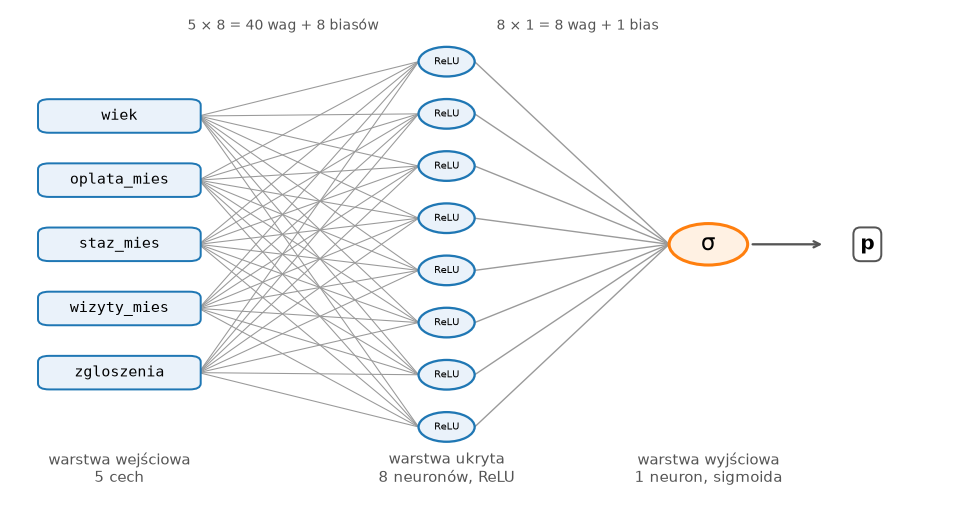
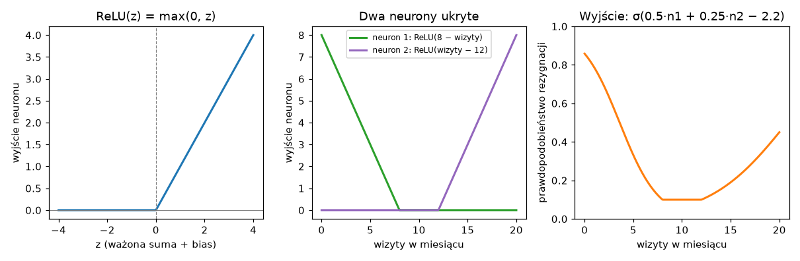
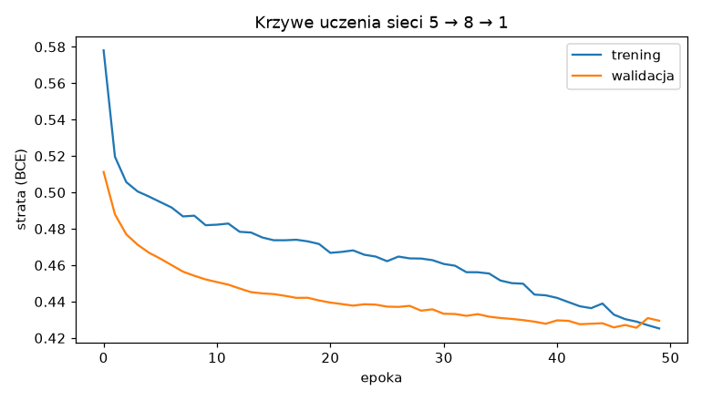
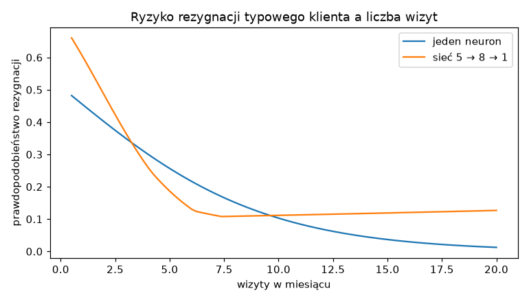
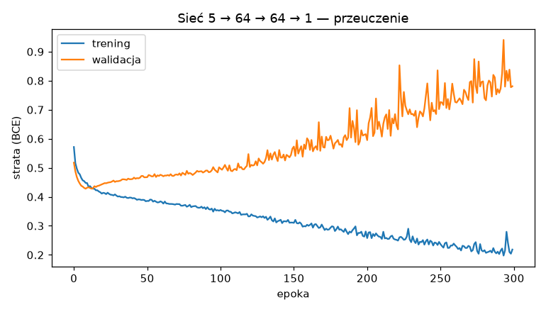

Zajęcia 5#
Sieć neuronowa — warstwa ukryta i trening w paczkach#
Na poprzednich zajęciach zbudowaliśmy jeden neuron i okazało się, że to po prostu regresja logistyczna. Na koniec padło też zastrzeżenie: neuron liczy ważoną sumę, więc umie powiedzieć tylko „im więcej X, tym większe (albo mniejsze) ryzyko" — zawsze w tę samą stronę. Dziś pokażemy na prawdziwych danych, że to za mało, i zrobimy to, co zapowiedzieliśmy: ułożymy neurony w warstwy. Tak powstaje sieć neuronowa — pierwsza prawdziwa w tym semestrze.
Przy okazji nauczymy się trenować tak, jak trenuje się duże sieci: nie na całym zbiorze naraz, tylko w paczkach, i z oczami utkwionymi w dwóch krzywych uczenia zamiast jednej.
Po dzisiejszych zajęciach będziesz w stanie:
- wskazać na danych zależność, której jeden neuron nie zapisze,
- wyjaśnić, czym jest warstwa ukryta i funkcja aktywacji ReLU — i dlaczego bez aktywacji kolejne warstwy nic nie dają,
- zbudować sieć gęstą w PyTorch i policzyć jej parametry,
- trenować sieć w paczkach (
DataLoader) i odróżnić krok od epoki, - narysować krzywą treningową i walidacyjną i rozpoznać na nich przeuczenie.
Przykłady z zajęć w Colabie
Cały materiał z tej strony jest też w gotowym notatniku — z kodem do uruchomienia. Otwórz go i uruchamiaj komórki po kolei, czytając materiał. Żeby zachować swoje zmiany, zapisz kopię: Plik → Zapisz kopię na Dysku.

Godzinę temu na Data Science w Pythonie
Budowaliśmy cechy. Dla MeritoBanku wyszło, że ważniejsza od kwoty kredytu i dochodu jest relacja między nimi — obciążenie ratą — i że ryzyko nie rośnie z nim równo, tylko skacze od ok. 30% dochodu. W zadaniu sprawdzisz, co daje więcej: większy model czy lepsza cecha.
Plan na dziś#
| Blok | Czas |
|---|---|
| Czego jeden neuron nie umie — na prawdziwych danych | 5 min |
| Warstwa ukryta i ReLU | 10 min |
| Sieć gęsta w PyTorch | 7 min |
| Trening w paczkach — krok i epoka | 10 min |
| Sieć kontra neuron | 5 min |
| Krzywa walidacyjna i przeuczenie | 5 min |
| Ściągawka | 3 min |
| Zadanie 5 | 45 min |
Czego jeden neuron nie umie#
Dane — tym razem trzy zbiory#
Znowu siłownia i te same pięć cech. Nowość: oprócz zbioru treningowego i testowego wydzielamy zbiór walidacyjny — 20% danych treningowych, na których będziemy podglądać sieć w trakcie treningu. Test zostaje nietknięty do samego końca, jak na zajęciach 2.
import numpy as np
import pandas as pd
import matplotlib.pyplot as plt
from sklearn.model_selection import train_test_split
from sklearn.preprocessing import StandardScaler
URL = "https://kubzal.github.io/wsb-merito/semestr_zimowy_2026_27/uczenie_glebokie/dane/silownia_czyste.csv"
df = pd.read_csv(URL)
cechy = ["wiek", "oplata_mies", "staz_mies", "wizyty_mies", "zgloszenia"]
X = df[cechy]
y = df["zrezygnowal"]
X_train, X_test, y_train, y_test = train_test_split(
X, y, test_size=0.2, random_state=42, stratify=y
)
X_tr, X_val, y_tr, y_val = train_test_split(
X_train, y_train, test_size=0.2, random_state=42, stratify=y_train
)
print("trening:", len(X_tr), " walidacja:", len(X_val), " test:", len(X_test))
scaler = StandardScaler()
X_tr_s = scaler.fit_transform(X_tr)
X_val_s = scaler.transform(X_val)
X_test_s = scaler.transform(X_test)
Skaler uczy się tylko na zbiorze treningowym — walidacja i test są tylko przekształcane. To ta sama zasada co przy wycieku danych z zajęć 3.
Zapaleńcy się wypalają#
Na końcu poprzednich zajęć rzuciliśmy hipotezę: a gdyby klienci z bardzo dużą liczbą wizyt też częściej rezygnowali? Sprawdźmy:
przedzialy = pd.cut(df["wizyty_mies"], bins=[0, 2, 4, 6, 8, 10, 15, 25])
df.groupby(przedzialy, observed=True)["zrezygnowal"].agg(["count", "mean"]).round(2)
count mean
wizyty_mies
(0, 2] 104 0.54
(2, 4] 341 0.38
(4, 6] 325 0.23
(6, 8] 274 0.11
(8, 10] 197 0.10
(10, 15] 196 0.16
(15, 25] 47 0.17
Odsetek rezygnacji spada z każdą wizytą — do ok. 10% przy 6–10 wizytach w miesiącu. Ale potem przestaje spadać, a nawet lekko rośnie: wśród klientów, którzy przychodzą ponad 10 razy w miesiącu, odchodzi 16–17%.
Jeden neuron tego nie zapisze. Ma dla wizyt jedną wagę — ujemną — więc zawsze mówi „więcej wizyt, mniejsze ryzyko", aż do zera. Dla klienta z 20 wizytami da ryzyko bliskie 0%, choć w danych jest 17%. Potrzebujemy modelu, który umie zgiąć krzywą.
Warstwa ukryta#
Kilka neuronów zamiast jednego#
Pomysł jest prosty: zamiast od razu liczyć wynik, najpierw puszczamy cechy przez kilka neuronów naraz. Każdy z nich liczy własną ważoną sumę z własnymi wagami — każdy może więc „zauważyć" coś innego. Ich wyniki trafiają do ostatniego neuronu, który liczy z nich prawdopodobieństwo.

- Warstwa wejściowa to po prostu cechy — tu 5 liczb. Nic w niej nie liczymy.
- Warstwa ukryta to 8 neuronów. „Ukryta", bo jej wyników nikt nie ogląda — to obliczenia pośrednie. Każdy neuron jest połączony z każdą cechą.
- Warstwa wyjściowa to jeden neuron z sigmoidą — ten sam, który znasz z zajęć 4, tyle że jego wejściami są wyniki warstwy ukrytej, a nie cechy.
Taka sieć, w której każdy neuron jednej warstwy jest połączony z każdym neuronem następnej, to sieć gęsta (dense, fully connected), zwana też perceptronem wielowarstwowym (multilayer perceptron, MLP). Zapisujemy ją skrótem 5 → 8 → 1. Kiedy warstw ukrytych jest kilka, mówimy o sieci głębokiej — stąd nazwa naszego przedmiotu.
ReLU — po co aktywacja w środku#
W neuronach warstwy ukrytej nie używa się zwykle sigmoidy, tylko dużo prostszej funkcji ReLU (rectified linear unit):
ReLU(z) = max(0, z) — liczby ujemne zamienia na zero, dodatnie zostawia bez zmian.
Brzmi niewinnie, ale to ona robi całą robotę. Spójrz, jak dwa neurony z ReLU potrafią razem zgiąć krzywą:

- Po lewej sama ReLU: płasko, a od zera w górę.
- W środku dwa neurony ukryte, każdy z inną wagą i biasem. Pierwszy „odpala" przy małej liczbie wizyt (im mniej, tym mocniej), drugi — dopiero przy bardzo dużej. Pomiędzy oba milczą.
- Po prawej neuron wyjściowy dodaje je z wagami i przepuszcza przez sigmoidę. Wychodzi krzywa, która spada, leży płasko i znowu rośnie — dokładnie kształt z naszej tabeli, którego jeden neuron nie umiał.
Więcej neuronów ukrytych to więcej „załamań" — z odpowiednio wielu kawałków da się złożyć dowolny kształt. Wagi i biasy, które o tym decydują, sieć znajduje sama podczas treningu, tym samym spadkiem gradientu co na zajęciach 4.
Bez aktywacji warstwy nic nie dają
Gdyby usunąć ReLU, warstwa ukryta liczyłaby ważone sumy, a warstwa wyjściowa — ważoną sumę ważonych sum. A ważona suma ważonych sum to… znowu ważona suma, tylko z innymi wagami. Sieć 5 → 8 → 1 bez aktywacji potrafi dokładnie tyle samo co jeden neuron. Funkcja aktywacji między warstwami to warunek konieczny, żeby więcej warstw dawało więcej możliwości.
Sieć gęsta w PyTorch#
Tensory#
Jak na zajęciach 4 zamieniamy dane na tensory — tym razem trzy zestawy:
import torch
from torch import nn
X_tr_t = torch.tensor(X_tr_s, dtype=torch.float32)
X_val_t = torch.tensor(X_val_s, dtype=torch.float32)
X_test_t = torch.tensor(X_test_s, dtype=torch.float32)
y_tr_t = torch.tensor(y_tr.values, dtype=torch.float32).view(-1, 1)
y_val_t = torch.tensor(y_val.values, dtype=torch.float32).view(-1, 1)
Etykiet testowych nie zamieniamy — do metryk ze scikit-learn wystarczy zwykłe
y_test.
Model#
Sieć 5 → 8 → 1 to cztery kroki w nn.Sequential:
torch.manual_seed(42)
siec = nn.Sequential(
nn.Linear(5, 8), # warstwa ukryta: 8 neuronów, każdy widzi 5 cech
nn.ReLU(), # aktywacja warstwy ukrytej
nn.Linear(8, 1), # warstwa wyjściowa: 1 neuron, widzi 8 wyników warstwy ukrytej
nn.Sigmoid(), # prawdopodobieństwo 0–1
)
siec
Sequential(
(0): Linear(in_features=5, out_features=8, bias=True)
(1): ReLU()
(2): Linear(in_features=8, out_features=1, bias=True)
(3): Sigmoid()
)
Porównaj z neuronem z zajęć 4 — nn.Sequential(nn.Linear(5, 1), nn.Sigmoid()).
Doszły dwie linijki w środku. Zasada jest jedna: liczba wyjść jednej warstwy
Linear = liczba wejść następnej (tu 8 i 8).
Ile sieć ma parametrów#
Parametry to wszystkie wagi i biasy, których sieć się uczy:
for nazwa, p in siec.named_parameters():
print(nazwa, tuple(p.shape))
print("razem:", sum(p.numel() for p in siec.parameters()))
Policzmy na palcach:
| Warstwa | Wagi | Biasy | Razem |
|---|---|---|---|
Linear(5, 8) |
5 × 8 = 40 (każdy z 8 neuronów ma wagę dla każdej z 5 cech) | 8 | 48 |
Linear(8, 1) |
8 × 1 = 8 | 1 | 9 |
| sieć | 57 |
Jeden neuron miał 6 parametrów, sieć ma 57. ReLU i Sigmoid nie mają
żadnych — to stałe funkcje. Ogólnie: warstwa Linear(a, b) ma
a × b + b parametrów.
Trening w paczkach#
Krok i epoka#
Na zajęciach 4 każdy krok spadku gradientu liczyliśmy na wszystkich klientach naraz. Przy tysiącu klientów to działa. Przy milionie zdjęć — nie: nie zmieszczą się w pamięci karty graficznej, a jeden krok trwałby wieki.
Dlatego sieci trenuje się w paczkach (mini-batch): bierzemy 32 losowych klientów, liczymy stratę i gradient tylko na nich, robimy krok — i bierzemy następnych 32. Gradient z 32 przykładów jest trochę „zaszumiony", ale za to kroków jest dużo więcej i są szybkie. W praktyce sieć uczy się tak szybciej.
- krok — jedna paczka: przewidywania, strata, gradient, poprawka wag,
- epoka — jedno przejście przez cały zbiór treningowy, czyli tyle kroków, ile jest paczek.
Paczki kroi za nas DataLoader:
from torch.utils.data import TensorDataset, DataLoader
paczki = DataLoader(TensorDataset(X_tr_t, y_tr_t), batch_size=32, shuffle=True)
xb, yb = next(iter(paczki))
print("jedna paczka:", tuple(xb.shape), tuple(yb.shape))
print("paczek w epoce:", len(paczki))
TensorDataset(X, y)skleja cechy z etykietami, żeby paczka zawsze miała pasujące do siebie wiersze.batch_size=32— wielkość paczki. 32 to bardzo typowa wartość.shuffle=True— w każdej epoce paczki są losowane od nowa, żeby sieć nie uczyła się w kółko tej samej kolejności.- 949 klientów / 32 = 29.7, więc w epoce jest 30 paczek (ostatnia mniejsza).
Pętla treningowa w paczkach#
Pięć kroków z zajęć 4 zostaje bez zmian. Dochodzi tylko druga, wewnętrzna pętla — po paczkach — i sprawdzian na walidacji po każdej epoce:
funkcja_straty = nn.BCELoss()
optymalizator = torch.optim.SGD(siec.parameters(), lr=0.1)
historia_tr, historia_val = [], []
for epoka in range(50):
suma = 0
for xb, yb in paczki: # jedna paczka = jeden krok
optymalizator.zero_grad()
strata = funkcja_straty(siec(xb), yb)
strata.backward()
optymalizator.step()
suma += strata.item()
historia_tr.append(suma / len(paczki)) # średnia strata w epoce
with torch.no_grad(): # po epoce: sprawdzian na walidacji
historia_val.append(funkcja_straty(siec(X_val_t), y_val_t).item())
print("strata treningowa:", round(historia_tr[-1], 3), " walidacyjna:", round(historia_val[-1], 3))
50 epok × 30 paczek = 1500 kroków. Na zajęciach 4 przez 200 epok zrobiliśmy 200 kroków.
plt.plot(historia_tr, label="trening")
plt.plot(historia_val, label="walidacja")
plt.legend()
plt.title("Krzywe uczenia sieci 5 → 8 → 1")
plt.xlabel("epoka")
plt.ylabel("strata (BCE)")

Dwie krzywe, dwie informacje:
- treningowa — jak dobrze sieć radzi sobie z danymi, na których się uczy,
- walidacyjna — jak dobrze radzi sobie z danymi, których nie widziała. To jest ta, która nas naprawdę obchodzi.
Obie spadają — sieć nauczyła się czegoś, co działa też na nowych klientach. Walidacyjna leży nawet trochę niżej niż treningowa. To nic dziwnego: strata treningowa to średnia z całej epoki, w trakcie której sieć dopiero się poprawiała, a walidacja to tylko 238 osób, akurat trochę łatwiejszych. Ważne, że obie idą w dół razem.
Dlaczego krzywa treningowa skacze?
Każda epoka to inne losowanie paczek, a każdy krok — gradient tylko z 32 osób. Strata treningowa nie spada więc idealnie gładko, jak na zajęciach 4. To normalne i nie ma się czym martwić, dopóki ogólny kierunek jest w dół.
Pętla w funkcji#
Ta sama pętla przyda się nam jeszcze kilka razy, więc zamykamy ją w funkcji. Dostaje model i dane, zwraca obie historie:
def trenuj(model, X_tr_t, y_tr_t, X_val_t, y_val_t, epoki=50, lr=0.1):
paczki = DataLoader(TensorDataset(X_tr_t, y_tr_t), batch_size=32, shuffle=True)
funkcja_straty = nn.BCELoss()
optymalizator = torch.optim.SGD(model.parameters(), lr=lr)
historia_tr, historia_val = [], []
for epoka in range(epoki):
suma = 0
for xb, yb in paczki:
optymalizator.zero_grad()
strata = funkcja_straty(model(xb), yb)
strata.backward()
optymalizator.step()
suma += strata.item()
historia_tr.append(suma / len(paczki))
with torch.no_grad():
historia_val.append(funkcja_straty(model(X_val_t), y_val_t).item())
return historia_tr, historia_val
Sieć kontra neuron#
Wyniki na teście#
Trenujemy jeden neuron dokładnie tak samo — te same paczki, ten sam współczynnik uczenia, te same 50 epok:
torch.manual_seed(42)
neuron = nn.Sequential(nn.Linear(5, 1), nn.Sigmoid())
historia_neuron = trenuj(neuron, X_tr_t, y_tr_t, X_val_t, y_val_t)
I porównujemy oba modele na zbiorze testowym. Krótka funkcja liczy stratę logarytmiczną (z zajęć 4) i F1 (z zajęć 2):
from sklearn.metrics import log_loss, f1_score
def ocen(model, X_t, y):
with torch.no_grad():
p = model(X_t).numpy().ravel()
return round(log_loss(y, p), 3), round(f1_score(y, (p > 0.5).astype(int)), 3)
print("jeden neuron strata, F1:", ocen(neuron, X_test_t, y_test))
print("sieć 5 → 8 → 1 strata, F1:", ocen(siec, X_test_t, y_test))
Sieć wygrywa wyraźnie — i na stracie, i na F1. To pierwsze w tym semestrze porównanie, w którym coś pokonało regresję logistyczną.
Co sieć zauważyła#
Zobaczmy dlaczego. Weźmy „typowego klienta" — medianę każdej cechy — i zmieniajmy mu tylko liczbę wizyt od 0.5 do 20. Dla każdej wartości pytamy oba modele o ryzyko rezygnacji:
wizyty = np.linspace(0.5, 20, 100)
typowy = pd.DataFrame([X_tr.median()] * len(wizyty))
typowy["wizyty_mies"] = wizyty
typowy_t = torch.tensor(scaler.transform(typowy), dtype=torch.float32)
with torch.no_grad():
p_neuron = neuron(typowy_t).numpy().ravel()
p_siec = siec(typowy_t).numpy().ravel()
plt.plot(wizyty, p_neuron, label="jeden neuron")
plt.plot(wizyty, p_siec, label="sieć 5 → 8 → 1")
plt.legend()
plt.title("Ryzyko rezygnacji typowego klienta a liczba wizyt")
plt.xlabel("wizyty w miesiącu")
plt.ylabel("prawdopodobieństwo rezygnacji")

Neuron rysuje swoją jedyną możliwą krzywą — gładki kawałek litery S, który schodzi do zera. Sieć nauczyła się, że powyżej ok. 7 wizyt ryzyko przestaje spadać, a potem nawet lekko rośnie — tak jak w tabeli z początku zajęć. Nikt jej tego nie powiedział — znalazła to w danych sama, dobierając wagi 8 neuronów ukrytych.
Sieć sama buduje cechy
Godzinę temu na DS w Pythonie budowałeś cechy ręcznie — flagę „nowy klient", koszt wizyty. Neurony warstwy ukrytej robią coś podobnego automatycznie: każdy uczy się jakiejś pośredniej cechy, z której neuron wyjściowy liczy wynik. Dlatego sieci tak dobrze radzą sobie z obrazami i tekstem, gdzie ręcznie cech zbudować się nie da. Czy to znaczy, że feature engineering nie jest już potrzebny? Sprawdzisz w zadaniu.
Krzywa walidacyjna i przeuczenie#
Skoro 8 neuronów pomogło, to może 64 — i to w dwóch warstwach — pomogą jeszcze bardziej? Zbudujmy naszą pierwszą sieć głęboką, 5 → 64 → 64 → 1, i potrenujmy ją dłużej:
torch.manual_seed(42)
duza = nn.Sequential(
nn.Linear(5, 64), nn.ReLU(),
nn.Linear(64, 64), nn.ReLU(),
nn.Linear(64, 1), nn.Sigmoid(),
)
print("parametrów:", sum(p.numel() for p in duza.parameters()))
historia_tr, historia_val = trenuj(duza, X_tr_t, y_tr_t, X_val_t, y_val_t, epoki=300)
print("najniższa strata walidacyjna w epoce:", np.argmin(historia_val))
print("duża sieć strata, F1:", ocen(duza, X_test_t, y_test))
plt.plot(historia_tr, label="trening")
plt.plot(historia_val, label="walidacja")
plt.legend()
plt.title("Sieć 5 → 64 → 64 → 1 — przeuczenie")
plt.xlabel("epoka")
plt.ylabel("strata (BCE)")

To jest najważniejszy wykres dzisiejszych zajęć. Przez pierwszych kilka epok obie krzywe spadają razem. Potem się rozjeżdżają: strata treningowa leci w dół, a walidacyjna zawraca i rośnie. Sieć z ponad czterema tysiącami parametrów i tylko 949 klientami do nauki zaczęła się uczyć na pamięć — łącznie z szumem, czyli klientami, którzy odeszli bez widocznego powodu. Na teście ma stratę gorszą niż mała sieć, a nawet gorszą niż jeden neuron.
To samo przeuczenie, które na zajęciach 2 widziałeś przy głębokim drzewie, tylko teraz widać je epoka po epoce. I od razu widać najprostsze lekarstwo: przerwać trening tam, gdzie krzywa walidacyjna była najniżej. Do tego i do innych sposobów — regularyzacji — wrócimy na następnych zajęciach.
Jak czytać dwie krzywe
| Co widzisz | Co to znaczy | Co zrobić |
|---|---|---|
| obie spadają i się wypłaszczają | dobrze | nic, może dłużej trenować |
| obie wysoko i płasko | niedouczenie — model za słaby | większa sieć, lepsze cechy |
| treningowa spada, walidacyjna rośnie | przeuczenie | mniejsza sieć, krótszy trening, regularyzacja |
Ściągawka#
| Chcę… | Kod |
|---|---|
| wydzielić zbiór walidacyjny | train_test_split(X_train, y_train, test_size=0.2, random_state=42, stratify=y_train) |
| sieć z jedną warstwą ukrytą | nn.Sequential(nn.Linear(5, 8), nn.ReLU(), nn.Linear(8, 1), nn.Sigmoid()) |
| sieć z dwiema warstwami ukrytymi | nn.Sequential(nn.Linear(5, 64), nn.ReLU(), nn.Linear(64, 64), nn.ReLU(), nn.Linear(64, 1), nn.Sigmoid()) |
| liczba parametrów | sum(p.numel() for p in model.parameters()) |
parametry warstwy Linear(a, b) |
a × b wag + b biasów |
| kształty parametrów | for nazwa, p in model.named_parameters(): print(nazwa, p.shape) |
| paczki danych | DataLoader(TensorDataset(X_t, y_t), batch_size=32, shuffle=True) |
| liczba paczek w epoce | len(paczki) |
| pętla w paczkach | for epoka in ...: → for xb, yb in paczki: → 5 kroków z zajęć 4 |
| strata walidacyjna po epoce | with torch.no_grad(): funkcja_straty(model(X_val_t), y_val_t).item() |
| trening jedną linijką | historia_tr, historia_val = trenuj(model, X_tr_t, y_tr_t, X_val_t, y_val_t) |
| ocena na teście | ocen(model, X_test_t, y_test) → (strata, F1) |
| epoka z najniższą stratą walidacyjną | np.argmin(historia_val) |
Zadanie 5 — Większy model czy lepsza cecha? (6 pkt)#
Czas: maks. 45 minut
Środowisko: Google Colab
Oddanie: notatnik .ipynb na Moodle
Neuron z zajęć 4 ocenia wnioski kredytowe MeritoBanku. Zespół IT proponuje zastąpić go siecią neuronową. Analitycy ryzyka twierdzą, że zamiast tego wystarczy dorzucić do neuronu cechy, które przygotowałeś godzinę temu na DS w Pythonie — z obciążeniem ratą na czele. Masz rozstrzygnąć ten spór liczbami.
Na początku notatnika wpisz swój numer albumu — od niego zależy wielkość
warstwy ukrytej Twojej sieci. Komórka startowa liczy cechy z DS w Pythonie
i przygotowuje dane — funkcja przygotuj zwraca tensory treningowe
i walidacyjne, tensor testowy i y_test:
import numpy as np
import pandas as pd
import matplotlib.pyplot as plt
import torch
from torch import nn
from torch.utils.data import TensorDataset, DataLoader
from sklearn.model_selection import train_test_split
from sklearn.preprocessing import StandardScaler
from sklearn.metrics import log_loss, f1_score
NR_ALBUMU = 123456 # ← wpisz swój numer albumu
MOJE_H = [4, 8, 16, 32][NR_ALBUMU % 4]
print("Neuronów w warstwie ukrytej:", MOJE_H)
URL = "https://kubzal.github.io/wsb-merito/semestr_zimowy_2026_27/data_science_w_pythonie/dane/kredyty_2026.csv"
df = pd.read_csv(URL)
# cechy z DS w Pythonie (zadanie 5)
df["rata"] = df["kwota_kredytu"] / df["okres_mies"]
df["obciazenie"] = df["rata"] / df["dochod_mies"]
df["mial_opoznienia"] = (df["opoznienia_12m"] > 0).astype(int)
df = pd.concat([df, pd.get_dummies(df["cel_kredytu"], prefix="cel", dtype=int)], axis=1)
cechy_surowe = ["wiek", "dochod_mies", "staz_pracy_lat", "kwota_kredytu",
"okres_mies", "inne_kredyty", "opoznienia_12m"]
cechy_ds = cechy_surowe + ["rata", "obciazenie", "mial_opoznienia", "cel_gotówkowy",
"cel_konsolidacyjny", "cel_remont", "cel_samochodowy"]
def przygotuj(cechy):
X_train, X_test, y_train, y_test = train_test_split(
df[cechy], df["niesplacony"], test_size=0.2, random_state=42, stratify=df["niesplacony"])
X_tr, X_val, y_tr, y_val = train_test_split(
X_train, y_train, test_size=0.2, random_state=42, stratify=y_train)
scaler = StandardScaler().fit(X_tr)
X_t = lambda X: torch.tensor(scaler.transform(X), dtype=torch.float32)
y_t = lambda y: torch.tensor(y.values, dtype=torch.float32).view(-1, 1)
return X_t(X_tr), y_t(y_tr), X_t(X_val), y_t(y_val), X_t(X_test), y_test
X_tr_t, y_tr_t, X_val_t, y_val_t, X_test_t, y_test = przygotuj(cechy_surowe)
print(X_tr_t.shape, X_val_t.shape, X_test_t.shape)
Do notatnika skopiuj też z notatek funkcje trenuj i ocen.
Rób części po kolei i pokaż mi wynik każdej części, gdy będzie gotowa.
Część 1 — sieć na surowych cechach (ok. 20 min)#
- Zbuduj sieć 7 →
MOJE_H→ 1 (ReLU w warstwie ukrytej, sigmoida na wyjściu,torch.manual_seed(42)przed budową). W komórce tekstowej policz ręcznie, ile ma parametrów, i sprawdź wynik kodem. - Wytrenuj ją funkcją
trenujprzez 100 epok (lr=0.1) i narysuj krzywą treningową i walidacyjną na jednym wykresie. W komórce tekstowej: w której epoce strata walidacyjna była najniższa? Czy pod koniec treningu sieć się przeucza — po czym to widać? - Wytrenuj tak samo (seed, 100 epok,
lr=0.1) jeden neuron na tych samych 7 cechach. Porównaj oba modele na teście funkcjąocen. Czy sieć wygrała z neuronem?
Część 2 — a może lepsze cechy? (ok. 25 min)#
- Przygotuj dane na 14 cechach z DS w Pythonie (
przygotuj(cechy_ds)) i wytrenuj na nich od nowa neuron i sieć zMOJE_Hneuronami ukrytymi — tak samo jak w części 1 (pamiętaj, że liczba wejść się zmieniła). - Zestaw wyniki wszystkich czterech modeli w jednej tabeli: neuron i sieć × surowe cechy i cechy z DS, kolumny — strata i F1 na teście. Narysuj krzywą treningową i walidacyjną sieci na 14 cechach.
- W komórce tekstowej napisz 2–3 zdania do zespołu IT i analityków: co dało większą poprawę względem neuronu na surowych cechach — sieć czy lepsze cechy? Czy sieć na 14 cechach pobiła neuron na 14 cechach? Jak myślisz, dlaczego tak wyszło? (Podpowiedź: ilu klientów ma sieć do nauki, a ile ma parametrów?)
Wskazówki#
- Parametry warstwy
Linear(a, b)to a × b wag + b biasów — przykład z sekcji „Ile sieć ma parametrów". - Trening i wykres to jedna linijka i pięć linijek:
historia_tr, historia_val = trenuj(siec, X_tr_t, y_tr_t, X_val_t, y_val_t, epoki=100), potem dwa razyplt.plotjak w notatkach. Każdy wykres ma mieć tytuł i podpisane osie. - Epoka z najniższą stratą walidacyjną:
np.argmin(historia_val). - Przed każdym budowaniem modelu
torch.manual_seed(42)— wtedy wyniki da się porównać i powtórzyć. - W części 2 najpierw
X_tr_t, y_tr_t, X_val_t, y_val_t, X_test_t, y_test = przygotuj(cechy_ds), a w modelachnn.Linear(14, ...)zamiastnn.Linear(7, ...). - Wyniki z części 1 zapisz w zmiennych, zanim nadpiszesz dane w części 2 —
np.
wynik_siec_surowe = ocen(siec, X_test_t, y_test). - Tabela z czterema wynikami:
pd.DataFrameze słownika albo z listy wierszy, jak w zadaniu 3. - Niższa strata = lepiej, wyższe F1 = lepiej. Różnice na trzecim miejscu po przecinku to szum — nie wyciągaj z nich wniosków.
Punktacja (6 pkt)#
| Punkty | Za co |
|---|---|
| 6 pkt | obie części zrobione na zajęciach i pokazane prowadzącemu |
| 4 pkt | jedna z dwóch części zrobiona na zajęciach |
| 2 pkt | zadanie dokończone po zajęciach i wysłane na Moodle w terminie |
| 0 pkt | brak rozwiązania albo wysłane po terminie |
Termin przesłania na Moodle: dzień przed kolejnymi zajęciami.
Serio, róbcie to na zajęciach
Te same 45 minut pracy jest warte 6 pkt tu i teraz albo 2 pkt w domu. Przez cały semestr robi to różnicę 32 punktów, czyli całej oceny w górę lub w dół.